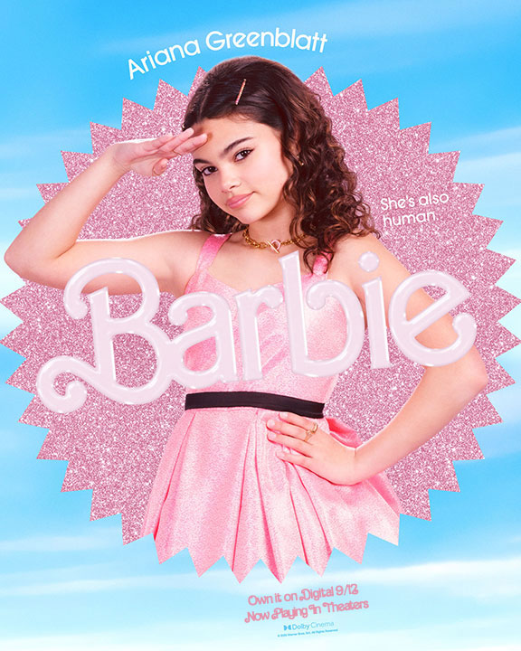
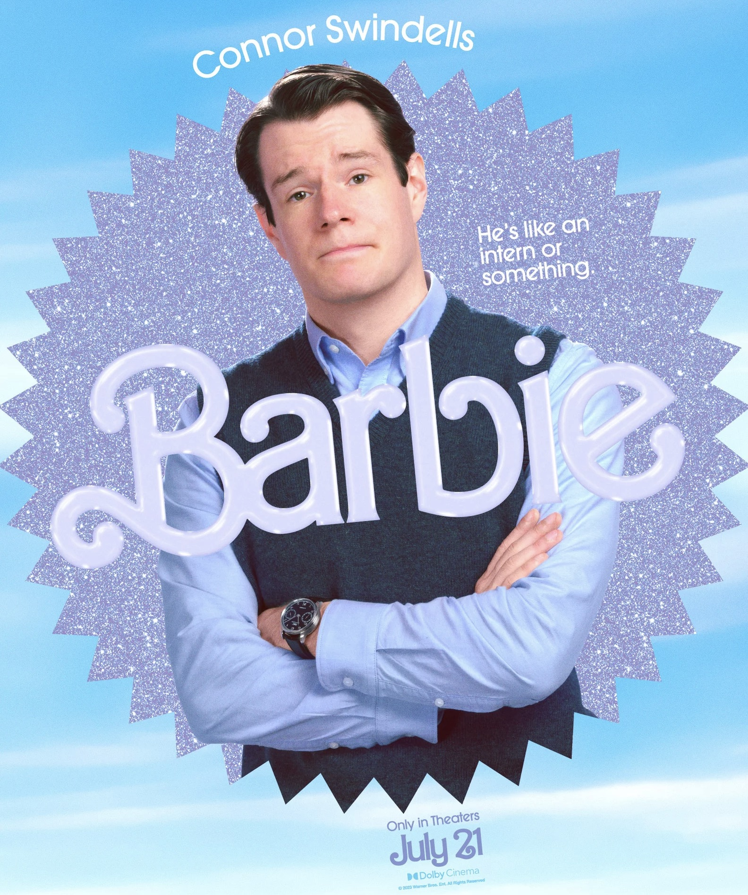
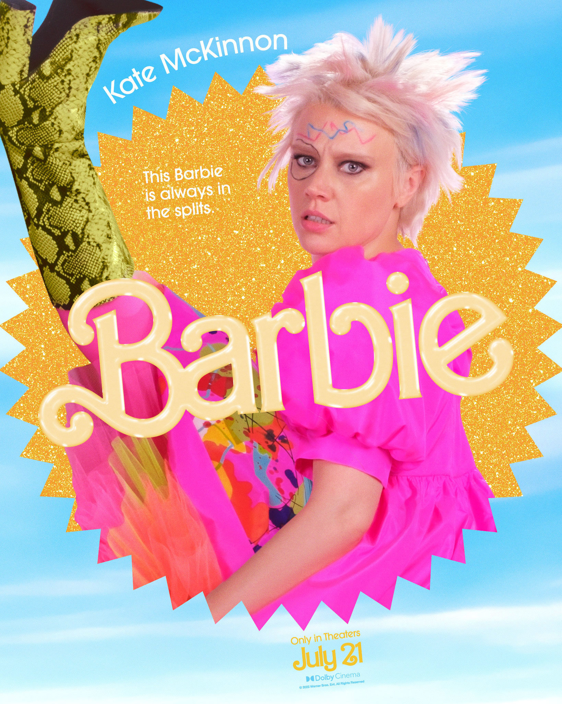
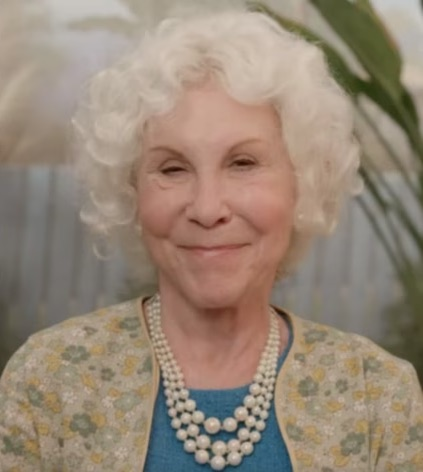

Characters
Barbie has quickly become one of the biggest movie events of the summer and a large part of that is thanks to the film's A-list cast. Anchored by the two actors who couldn’t possibly be more perfectly cast as Barbie and Ken. Margot Robbie and Ryan Gosling embody the classic good looks inspired by the toy famous toys, but they’re also incredibly skilled actors who have delivered some fantastic performances during their careers.
Margot Robbie as Barbie

Headshot of Margot Robbie as Barbie. Warner Brothers.
Margot Robbie leads the film's ensemble as the "stereotypical" Barbie, who at the start of the film begins to have an existential crisis as she is questioning her own mortality, notices that her feet have gone flat, and she now has cellulite. After getting advice from the Weird Barbie, Barbie journey to the real world to find the child playing with her, who she suspects is the angsty middle-schooler Sasha, unbeknownst to her, she actually has to find Sasha's mother Gloria.
Ryan Gosling as Ken

Headshot of Ryan Gosling as Ken. Warner Brothers.
Ken doesn't have the same amazing attributes as Barbie, and he doesn't even have a job, his job is just "beach." His romantic advances are constantly rejected by Barbie, but that doesn't stop him from continuing to try to pursue her. He ends up joining Barbie on her journey to the real world where he learns about the patriarchy and that the real world treats him far better than Barbie Land does. He's also a big fan of horses and Matchbox Twenty.
America Ferrera as Gloria

Headshot of America Ferrera as Gloria. Warner Brothers.
Gloria is a stressed Mattel employee who has been struggling to connect with her daughter Sasha. She is the one to cause Barbie's existential crisis after playing with Sasha's old Barbie toys, which transfers her fears and worries over to Robbie's Barbie.
Ariana Greenblatt as Sasha
Headshot of Ariana Greenblatt as Sasha. Warner Brothers.
Sasha, Gloria's daughter, thinks of Barbie as a "fascist" who encourages unrealistic beauty standards to young girls and contributes to global warming.
Connor Swindells as Aaron Dinkins
Headshot of Connor Swindells as Aaron Dinkins. Warner Brothers.
Aaron Dinkins plays an intern at Mattel. Aaron alerts Mattel's CEO of the presence of Barbie and Ken in the real world, and takes part in attempting to capture them to send them back to Barbie Land.
Kate McKinnon as Weird Barbie
Headshot of Kate McKinnon as Weird Barbie. Warner Brothers.
Kate McKinnon stars as the Weird Barbie, who helps provide Robbie's Barbie with the existential answers that she's looking for. She lives in seclusion, away from the other Barbies and the Kens, who are constantly making fun of her behind her back. Her home is full of other rejects, including Sugar Daddy Ken and the Barbie Video Girl.
Simu Liu as Ken

Headshot of Simu Liu as Ken. Warner Brothers.
Simu Liu plays another Ken, who is the rival of Gosling's Ken, and is constantly competing against him to win the affection of the stereotypical Barbie.
Michael Cera as Allan

Headshot of Michael Cera as Allan. Warner Brothers.
Allan is the only non-Ken man in Barbieland. He's constantly being ignored by the other dolls and has very dated taste in music. He ends up teaming with Barbie, Gloria, and Sasha to save Barbie Land from the Patriarchy.
Will Ferrell as the CEO of Mattel

Headshot of Will Ferrell as the CEO of Mattel. Warner Brothers.
The CEO of Mattel is shocked to learn that real-life versions of Barbie and Ken are out and about in Los Angeles. He, along with other Mattel workers, attempt to send Barbie back to Barbie Land.
Rhea Perlman as Ruth Handler
Headshot of Rhea Perlman as Ruth Handler. Warner Brothers.
Ruth Handler was the creator of the original Barbie doll. Her ghost presides in the Mattel Headquarters and at the end of the film, grants Barbie her wish to become human.